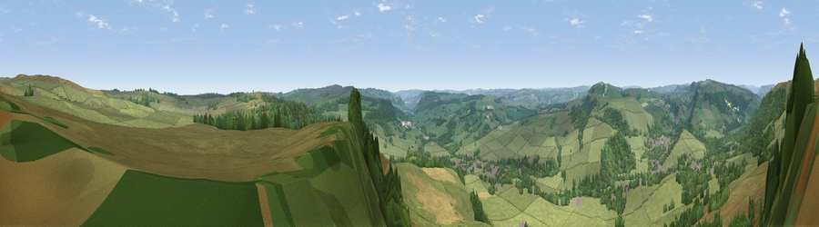

Viewpoint near Curbar
#12407 in England · top 13% of its area beats it · near Curbar · path 179 mWhere it is
The exact computed spot (SK 26025 73925). Click the marker for map links.
Public access: the nearest public right of way is about 179 m away — the final stretch may cross private land. Computed from Natural England's CRoW access layer and OpenStreetMap rights of way — not the legal definitive map. Always verify locally.
The view, rendered

A 360° render of this exact spot computed from the terrain model, tree cover and land cover — summer colours, afternoon light, calibrated against photographs of famous viewpoints. Real trees, hedges and buildings will differ in detail.
The panorama
Grey silhouette: terrain skyline in each direction (720 bearings, Earth curvature and refraction included). Dashed green: skyline with trees (+15 m) and buildings (+8 m) as obstacles. Blue strip: how far the ground is visible on each bearing.
Where the view opens
Wedge length = distance to the farthest visible ground on that bearing (vegetation-aware). Rings at 10, 25 and 50 km.
What fills the view
67% grassland · 31% woodland · 2% cropland ·
Angular shares of the visible panorama (visual magnitude), not map area. Landscape diversity 0.33 (0–1 Shannon).
Key numbers
More beautiful places nearby
The staircase of upgrades: each row has a higher view potential than everything closer. Driving times are estimates from straight-line distance, calibrated against real road routing — check an actual route before setting out.
| Place | Direction | Drive | Score |
|---|---|---|---|
| Viewpoint near Froggatt | N · 2 km | ~6 min | 65.2 |
| High Rake | W · 5 km | ~11 min | 71.1 |
| Viewpoint near Thornhill | NNW · 16 km | ~29 min | 74.1 |
| Viewpoint near Wharncliffe Side | NNE · 23 km | ~38 min | 75.2 |
| Tissington Hill | SSW · 24 km | ~39 min | 75.5 |
| Wild Bank | NW · 36 km | ~55 min | 76.2 |
| Viewpoint near Carrbrook | NW · 37 km | ~56 min | 77.1 |
| Viewpoint near Mow Cop | WSW · 43 km | ~63 min | 78.9 |
53.26169, -1.61131 · source: screening · position refined by local search. Computed location — check access rights before visiting.